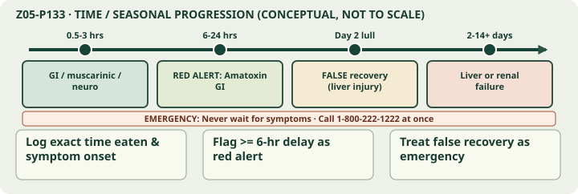

Z05-P133 · Wild foods and poisonous lookalikes · New manuscript
Delayed-Onset Mushroom Toxicity Syndrome Matrix (CDC MMWR Evidence)
Recognize why delayed gastrointestinal symptoms (6 to 24 hours) after wild mushroom ingestion signal potentially fatal liver or kidney toxicity.
When it applies · Evaluating any suspected wild mushroom ingestion documented in CDC Minnesota and 2026 outbreak reports.
Equipment · Phone/911, Minnesota Poison Control 1-800-222-1222, clock to record exact ingestion time.

Actions
- Record exact ingestion time and symptom onset immediately: gastrointestinal symptoms starting 6 to 24 hours after eating wild mushrooms are the classic red flag for lethal amatoxin poisoning (Amanita, Galerina) as documented in CDC Minnesota MMWR reports.[B06, B07, B08]
- Never be reassured by a temporary honeymoon improvement on day two after vomiting subsides—in amatoxin poisoning, silent severe liver and kidney failure is actively progressing during that lull.[B06, B07, B08]
- Recognize multi-day delayed renal failure (orellanine Cortinarius, 2–14+ days), neurologic/seizure syndromes (gyromitrin), and rapid muscarinic/GI syndromes; call Poison Control at once for EVERY suspected wild mushroom ingestion without waiting for symptoms.[B06, B08, B09]
Failure recognition · Waiting at home to see if nausea passes—or going home when vomiting pauses on day two—allows irreversible liver failure.[B06, B07, B09]
Verify · Exact ingestion time, symptom onset window, and immediate Poison Control/hospital notification are completed without delay.[B06, B08, B09]
Stop or change course · Stop waiting and call 911 and Minnesota Poison Control (1-800-222-1222) immediately for any suspected wild mushroom exposure or delayed vomiting/diarrhea.[B06, B07, B09]
Evidence and editorial notes
- B06 · CDC MMWR · Notes from the Field: Severe Mushroom Poisoning — Minnesota 2018 (MMWR 68(21))
- Section: Minnesota severe mushroom poisoning outbreak (MMWR 68:21) · Conditions: Wild mushroom foraging and lookalike misidentification in Minnesota
Support: Foragers in Minnesota suffered severe hepatotoxic poisoning after mistaking lethal amatoxin-containing mushrooms for familiar edible species.
Limitations: Delayed gastrointestinal onset (6-24+ hours) followed by a false recovery phase precedes liver failure; treat any wild mushroom ingestion with symptoms as a medical emergency. · Conflicting evidence: None noted.
Editorial note: Critical Minnesota fungal hazard evidence. · Specialist reviewer: Medical toxicologist and mycologist
Primary source · checked 2026-11-25 - B07 · CDC MMWR · Amanita phalloides Mushroom Poisonings — 2026 Outbreak Report (MMWR 75(20))
- Section: Amanita phalloides outbreak and amatoxin lethality (MMWR 75:20) · Conditions: Recognizing lethal Amanita lookalike risk and cooking myths
Support: Amatoxins in death cap and destroying angel species survive boiling, freezing, and drying; misidentification causes acute liver failure and death.
Limitations: Never rely on folklore tests, boiling, peeling, or visual similarity to safe regional species. · Conflicting evidence: None noted.
Editorial note: Prohibits boiling/peeling mushroom myths. · Specialist reviewer: Medical toxicologist and mycologist
Primary source · checked 2026-11-25 - B08 · North American Mycological Association · Mushroom Poisoning Syndromes Reference (Current web edition)
- Section: Mushroom poisoning syndrome classes and specimen retention · Conditions: Evaluating suspected wild fungal exposure
Support: Mushroom toxins span distinct syndromes (amatoxins, gyromitrin, orellanine, muscarine, ibotenic acid, GI irritants) with onset from minutes to days.
Limitations: Save remaining uneaten mushroom pieces in a paper bag (not sealed plastic) for mycologist identification if exposure occurs, and call Poison Control immediately. · Conflicting evidence: None noted.
Editorial note: Grounds Z05 fungal toxicology & emergency referral. · Specialist reviewer: Mycology toxicology reviewer
Primary source · checked 2026-11-25 - B09 · Minnesota Poison Control System · Poison Help 1-800-222-1222 and Regional Plant/Mushroom Guidance (Current web edition)
- Section: Minnesota Poison Control 1-800-222-1222 immediate referral · Conditions: Any suspected toxic plant, berry, root, or mushroom ingestion or severe dermal exposure
Support: Call 1-800-222-1222 immediately (or 911 for breathing difficulty, collapse, seizures, or altered alertness); do not wait for delayed symptoms.
Limitations: Never induce vomiting or administer home remedies unless explicitly instructed by Poison Control or EMS. · Conflicting evidence: None noted.
Editorial note: Mandatory Z05 poison-response escalation. · Specialist reviewer: Clinical toxicologist / Poison Center
Primary source · checked 2026-11-25
Source lineage · New manuscript (Z05 P19-C clinical toxicology) · Classification · New manuscript.